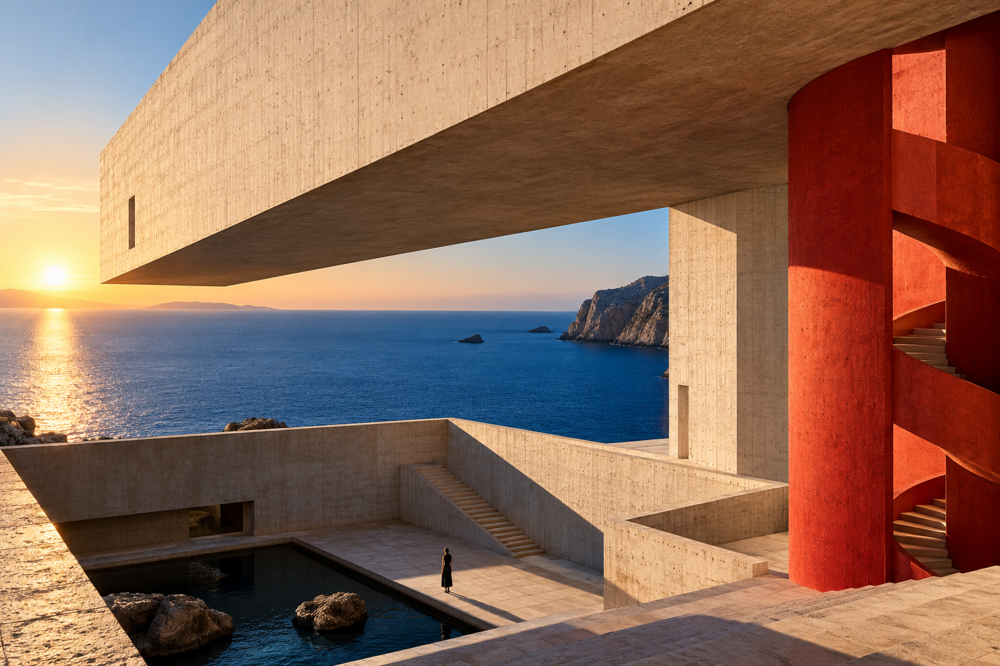

FIELD NOTES
06 / 10
看布局骨架
设计拆解 ↗
↖ 案例集
FIELD
NOTES.
THE JOURNAL OF
SPACE & EVERYDAY LIFE
VOL. 08 / 概念刊

08
SPACE
& PAUSE
有形的空间，
无声的时间。
01 / COVER STORY
当建筑不再急于填满，
光线便开始替它说话。
打开本期主文章 ↗
FORM FOLLOWS FEELING. / 让空间留有余地。
F/N
一本关于观看、触摸
和重新发现日常的概念刊物。
02
材料，也会呼吸。
木、石与灰泥，在时间里慢慢变得柔软。
编辑手记 ↗
03
在街角，重新发现。
把一次不赶时间的漫步，变成观察。
阅读笔记 ↗
LAYOUT / 06
用大图与文字节奏构成杂志
返回完整效果 ×
×